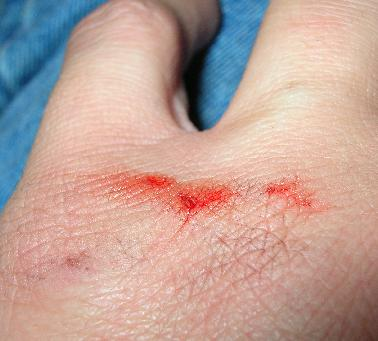
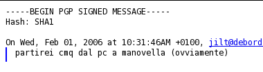
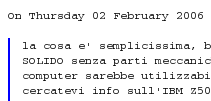

Feb 09 2006

BRUCIA IL CALCOLATORE
A nessuno viene COSI’ ROTTO IL CAZZO quanto viene rotto a noi poveri stronzi informatici mal’eretti, A NESSUNO!
Feb 09 2006
A nessuno viene COSI’ ROTTO IL CAZZO quanto viene rotto a noi poveri stronzi informatici mal’eretti, A NESSUNO!
Feb 09 2006
cioe’ MAI
altrimenti nello sforzo col cacciavite ti SBREGHI UNA MANO e urli fortissimo PORCODIOOO! PORCO DDIOOOO!!! fottendotene della VICINA DI CASA DI 90 ANNI, e SCAGLIANDO PINZA E CACCIAVITE IN TERRA CON VIOLENZA INAUDITA

ODIO IL MONDO
ODIO TUTTO E TUTTI, PORCO DIO
odio la NORMALITA’ DI CERTA GENTE, ODIO GLI SCEMI, ODIO GLI SCEMI
SCEMI
VI ODIO
Feb 09 2006
MALEDETTO
[...] ho avuto vicissitudini nel riparare il motorino d’avviamento;
ho comprato un pignone presso questo ricambista, Bottaro, a Siracusa, in via f.crispi, lungo la strada che porta alla stazione: 60 euro. Ma ci siamo accorti solo dopo che anche l’indotto era completamente distrutto! cosi’ pochi giorni dopo, e senza nemmeno averlo usato,ho chiesto al ricambista di cambiare il pignone con il modello per il motorino di ricambio che nel frattempo avevo recuperato da uno sfascio, e che apparentemente non andava … sarebbe bastato un semplice scambio, magari integrando una eventuale differenza di prezzo.
… niente da fare: “eh, abbiamo gia’ ordinato il pezzo, non possiamo tenerne 2 in magazzino, avrebbe dovuto dircelo subito 2 giorni fa, ora e’ troppo tardi, l’ordine e’ partito, bla, bla, bla. SE CI AVESSE TELEFONATO SUBITO AVREMMO POTUTO CAMBIARLO, ORMAI NON PIU’”
delusione! ma mi serve l’altro pignone, perche’ sono praticamente a piedi; cosi’ lo compro. altri 55 euro. Con temperatura glaciale, rimonto il SECONDO NUOVO PIGNONE, sul “nuovo” motorino. Rimonto il motorino sul 242, una fatica bestiale, mi sbrego un braccio nello stringere un bullone, nomino dio invano almeno un centinaio di volte.
provo ad avviare. FRRRRRR. stesso difetto.
ergo, il SECONDO NUOVO PIGNONE, per il “nuovo” motorino, non va bene neanche lui perche’ e’ TROPPO CORTO, non fa presa sul VOLANO DEL MOTORE.
VOLANO, VOLA NELL’ANO
sono passate solo DUE ORE da quando ho comprato questo SECONDO NUOVO PIGNONE. COSI’ STAVOLTA telefono IMMEDIATAMENTE a quel bastardo di Bottaro e chiedo di poterlo restituire, visto che lui stesso mi ha detto che se lo avessi chiamato subito …
INVECE, CAZZI.
… allucinante. sono stato trattato coi piedi. non ha voluto sentire ragioni. sono stato insultato, mi ha dato dell’ incompetente, e mi ha detto che se ho sbagliato misura del pignone sono affari miei, non suoi. In definitiva, mi devo tenere 2 pignoni come soprammobili, nuovi, perfetti. 115 euro di costosi soprammobili; e non ha voluto sentire ragioni, sono stato praticamente insultato e nient’altro.
odio litigare per i soldi; cosi’ ho chiuso la telefonata e buonanotte; questo ricambista non mi vedra’ mai piu’, e da me
avra’ solo pubblicita’ negativa. una persona veramente di merda (mai avuto problemi del genere, con tanti altri ricambisti, MAI)che gente :(
dovro’ SFOGARE L’ODIO. ESSO COVA IN ME, COME NIDO DI SERPI IN FIAMME, QUAL RICETTACOLO DI IMMONDI VERMI. ma la vendetta UN GIORNO ARRIVERA’, ATROCE, IMPLACABILE, DIVINA.
alla fine ho adattato uno dei due pignoni, quello da 60 euro, e gliel’ho messa in culo al motorino d’avviamento, pero’ mi resta un pignone sul groppone, ebay lo prenera’
bottaro, che tu sia maledetto negli anni a venire. il peso di questo karma di mmerda te lo porterai appresso per SEMPRON, CAZZON SEMPRON DURON
MUORHI
Feb 08 2006
Quando il MALE FORA i cervelli MALATI di programmatori DEFICIENTI, trasformando la loro materia grigia in MATERIA FECALE VERMINOSA, il risultato e’ una cosa come CVS.
Indubbia l’utilita’ di CVS. Ma vediamo l’uso di sta merda con esempi pratici.
Grazie a sandazzo, lacerto fistazzo per gli esempi…
Negli esempi andro’ a capo perche’ WORDPRESS MERDA.
Esempio 1: devo sucarmi sorgenti di “dioporco” dal cvs del cazzo in forma anonima senza utenti ne altro.
export CVSROOT=
":ext:cvs@cristo.org:/home/cvs"
cvs co dioporco
il CVSROOT nella loro visione astrusa (grazie PALLO-PR0N) sarebbe:
:metododiconnessione:utente@macchina:root_del_cvs
metodo di connessione va specificato PER FORZA. una opzione di DEFAULT NO, EH?
Esempio 2: devo sucare sorgenti di “porcodio” da un cvs con la mia utenza, lavorarci su e altre stronzate del genere.
export CVSROOT=
":pserver:asbesto@suca.org:/home/cvsroot"
export CVS_RSH="ssh"
cvs login (mi chiede una pw, una volta sola, perche' poi crea ~/.cvspass)
cvs co porcodio
ora ci lavoro e uppo le mie modifiche:
cvs update (suco altrui modifiche)
cvs commit (mando le mie PRENE MODI-FICCHE)
ora, non vi si rivoltano le BUDELLA URETRATE? non vi si SCIMMIANO I COGLIONI GLANDAZZI? a me personalmente si ROTO-PIRSA IL FRENULAZZO a vedere sintassi assurde di questo tipo
cioe’, porco DDIO, per fare una cosa devo FARE UN EXPORT, poi lanciare un comando con un’unica OPZIONE ad INTUITIVITA’ ZERO, non pratica ne’ MNEMONICAMENTE ACCETTABILE, poi devo lanciarne UN’ALTRO ANCORA per FARE QUELLO CHE DEVO FARE
/CALCINCULO
ALLUCINANTE
PROPOSTA DI SOLUZIONE
cvs [-p protocol] [-u user] server cosasucuisilavora azione
MA CI VUOLE TANTO, PORCO CRISTO DIO?
gli esempi fatti sopra diverrebbero:
cvs cristo.org porcodio get
spiegazione: cvs senza opzioni di procollo (-p) ne sceglie uno standard. Manca -u utente? allora OVVIAMENTE e’ una connessione anonima, fa’ entrare per prendere i sorgenti. il server e’ li, il nome del sw sta dopo, l’azione e’ get, prendi i sorgenti e non rompere il cazzo. FINE.
cvs -p ext -u asbesto suca.org porcodio get
mi pare chiaro. protocollo ext, user asbesto (TI CHIEDE LA PW, ORA). il server e’ li, il sw su cui lavorare e’ scritto dopo; get = suco i sorgenti, put (o commit se volete) MANDA i sorgenti (cioe’ le modifiche)
MA CI VUOLE TANTO, PORCO DIO?
Feb 07 2006
NO, il mio collega NON C’E'!
E’ inutile che vi affacciate con i vostri abiti da illustri rompicoglioni, NON C’E’.
E NON MI CHIEDETE NIENTE, IO NON SO’ NIENTE.
MIEMTE.
NO.
Feb 04 2006
Perdonatemi se ho scritto 3 o 4 post su wordpress e opera lamentandomi dell’editor, in realta’ ero io a sbagliare… ero talmente preso dall’energia negativa che non mi sono accorto di quanto fosse vicina al mio naso la soluzione, e cosi’ ho annoiato voi e me stesso con queste inutili bestemmie per un problema inesistente, chiedo merdono…
Name: rdfm | E-mail: rockdreamer@gmail.com | URI: http://www.rdfm.org/ammuzzu/ | IP: 81.208.88.100
- http://www.blogdercaxxo.org/wp-admin/profile.php
- Vai in fondo
- Opzioni articoli >> Utilizza l’editor avanzato durante la scrittura (sempre se usi una versione localizzata…)
- togli il check dal checkbox
- clicca su “aggiorna il profilo”
- comprati “wordpress for dummies”….miiiiiiiiiiiiiiinchia…
Grazie a RDFM, che dallo stile sembra uno degli acuti commentatori di Punto Informatico, non ho piu’ problemi con wordpress 2, evviva!
Feb 02 2006
Fravia dice bene quando sostiene che il software non va necessariamente aggiornato all’ultima versione, ma purtroppo in questa sua affermazione non tiene conto dei problemi di sicurezza, che oramai sono all’ordine del PORNO. Ho aggiornato thunderbird, e tra le novita’ che sto SUBENDO c’e’ questa:


Non, non ho scazzato lo zoom, sono due ritagli di due mail differenti i cui caratteri vengono visualizzati CON DIMENSIONI DIVERSE, PERCHE’ ?!
Probabilmente sara’ qualche supporto per il CRISTORIENTALE e i caratteri bislacchi, ma porco dio io ora devo zummare per leggere le STRACAZZO di email.
NON
E’
GIUSTO
Feb 02 2006
PORCO DIO, E IL SUO CREATO.
Chiama questo.
Questo non sa nulla, dice di chiamare l’altro.
Chiami l’altro che ha il cellulare spento.
Chiami il terzo che e’ un’incognita (per ora brucaliffo) e ti dice di chiamare ESSO.
Chiami ESSO ma ESSO non RISP, E IO SONO DISP!
…
Ma mandare una TROIAMADO’ di e-mail no eh? Si RISOLREBBERO tanti problemi se la gente approfittasse un minimo degli strumenti a disposizione… Forse e’ un problema di software, forse le persone sono intimorite dai client di posta.
MIA MOGLIE E’ UNA GRAN TROIA E MIO FIGLIO SI FA IN VENA, TELEFUNKEN!
A proposito di PORCO DIO, ho delle news riguardo wordpress 2 e la sua merdosa evoluzione verso prodotto inusabile; ebbene sembra che Opera 9 supportera’ gli editor WYSYWYG, quindi anche questa STRONZATA di editor (che ho scoperto essere TinyMCE)…
Ma perche’ non tenere l’interfaccia della serie 1.x ? E’ comoda semplice ed essenziale, anche perche’ WYSYWYG un par di palle, perche’ NON E’ COSI’, what you see is what HTML e CSS ti fanno vedere, quindi porco dio BASTA CON QUESTO MITO DEL WEB VISTO COME FAI-QUEL-CHE-CAZZO-TI-PARE-BASTA-CHE-SIA-FICO.